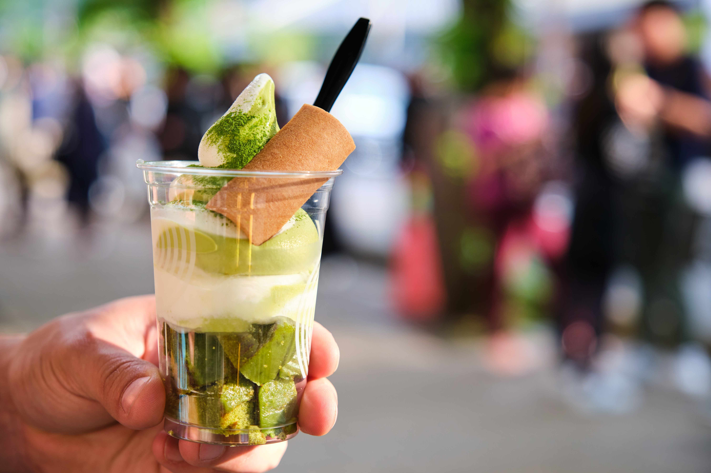
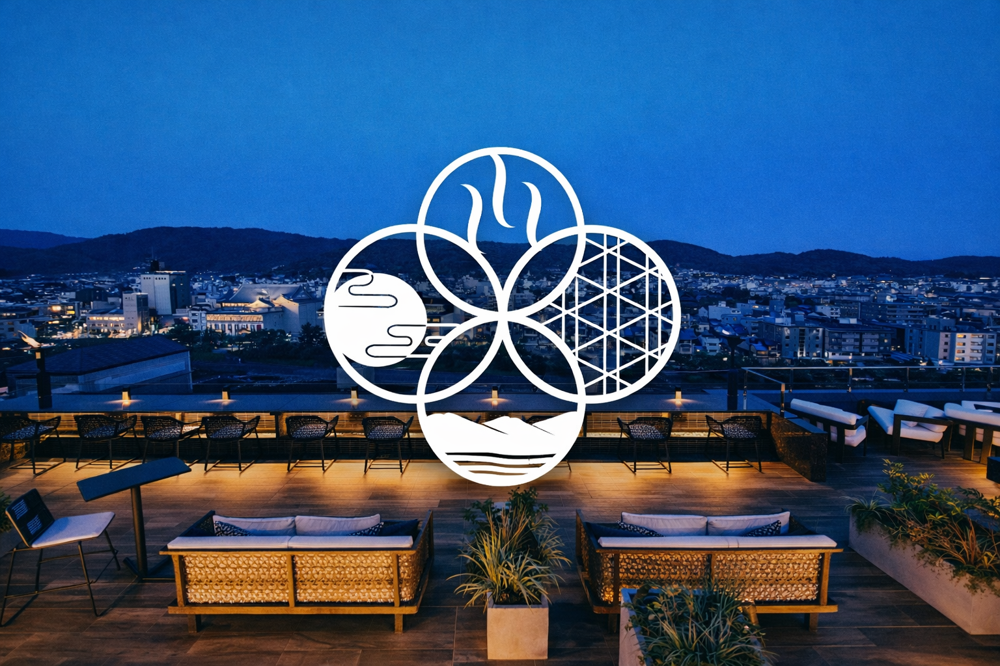
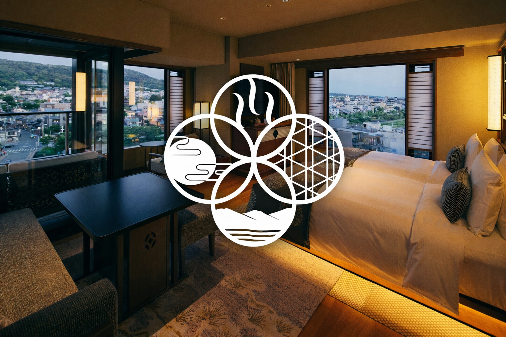

KYOTO
SAKURA GUIDE
SAKURA HIGHLIGHTS
Sakura Spots
교토의 대표 벚꽃 명소를 슬라이드 형식으로 보여주는 영역


TRAVEL COURSES
Recommended Courses
교토를 처음 방문하는 여행자부터 벚꽃 시즌 산책, 야경, 먹거리까지 다양한 스타일로 즐길 수 있는 추천 코스입니다.

Classic Kyoto Course
클래식 교토 코스
교토를 처음 방문하는 여행자에게 가장 추천되는 대표 코스입니다. 전통적인 거리 풍경과 사찰, 그리고 기온 거리까지 교토의 분위기를 하루에 경험할 수 있습니다.
동선
청수사 → 산넨자카 / 니넨자카 → 야사카 신사 → 기온 거리 → 카모 강

Sakura Walk Course
벚꽃 산책 코스
교토에서 가장 아름다운 벚꽃 산책 코스 중 하나입니다. 벚꽃이 흐드러지게 피는 길을 따라 산책하며 사찰과 정원을 함께 즐길 수 있습니다.
동선
철학의 길 → 난젠지 → 게아게 인클라인 → 헤이안 신궁

Arashiyama Nature Course
아라시야마 자연 코스
교토 서쪽에 위치한 아라시야마 지역의 자연과 전통 사찰을 함께 즐길 수 있는 코스입니다. 대나무 숲과 아름다운 강 풍경을 경험할 수 있습니다.
동선
아라시야마 대나무 숲 → 텐류지 → 도게츠교 다리 → 아라시야마 강

Kyoto Night Walk
교토 야경 산책 코스
밤이 되면 더욱 아름다운 교토의 분위기를 느낄 수 있는 코스입니다. 전통 거리와 골목길을 따라 조용한 교토의 밤을 즐길 수 있습니다.
동선
야사카 신사 → 기온 거리 → 시라카와 운하 → 폰토초 골목

Kyoto Temple Highlights
교토 대표 사찰 코스
교토 북부 지역의 대표적인 사찰들을 둘러보는 코스입니다. 전통적인 일본 건축과 정원을 함께 감상할 수 있습니다.
동선
금각사 → 료안지 → 닌나지 → 기타노 텐만구

Food & Market Course
교토 먹거리 & 쇼핑 코스
교토의 다양한 길거리 음식과 전통 시장을 즐길 수 있는 코스입니다. 먹거리 탐방과 쇼핑을 함께 즐기기에 좋은 지역입니다.
동선
니시키 시장 → 테라마치 상점가 → 가와라마치 거리 → 카모 강
FOOD GUIDE
Food by Area
관광지 주변 맛집을 지역별로 확인할 수 있습니다.

Arashiyama
아라시야마 주변 추천 맛집

Gion
기온 주변 추천 맛집

Kiyomizu
청수사 주변 추천 맛집

Kawaramachi
카와라마치 주변 추천 맛집
Food Picks
스태프 추천 맛집
교토에서 즐길 수 있는 추천 음식점을 종류별로 정리했습니다.
고기・일식 추천
鉄板焼き
モーリヤ祇園
철판요리 / 특별한 날에 어울리는 분위기
鉄板焼き
のいち
철판요리 / 차분하고 고급스러운 식사
焼き鳥
祇園刀
야키토리 / 교토다운 분위기를 즐기기 좋은 곳
焼肉
一笑
야키니쿠 / 진한 풍미의 고기 요리
焼肉
ひろ
야키니쿠 / 부담 없이 즐기기 좋은 인기점
焼肉
大黒戎先斗町店
야키니쿠 / 폰토초 주변 식사 코스로 추천
焼肉
善
야키니쿠 / 차분하게 고기 요리를 즐기기 좋은 곳
お寿司
寿司よし乃
스시 / 정갈한 분위기의 추천점
お寿司
銀座おのでら
스시 / 특별한 식사에 잘 어울리는 고급감
お寿司
がんこ
스시 / 비교적 편하게 방문하기 좋은 곳
お寿司
杉玉
스시 / 캐주얼하게 즐기기 좋은 분위기
お寿司
東寿司
스시 / 로컬 감성으로 즐기기 좋은 선택
캐주얼・기타 추천
居酒屋
うしのほね
이자카야 / 저녁 시간대에 분위기 좋게 즐기기 추천
居酒屋
おにかい
이자카야 / 여행 중 가볍게 들르기 좋은 곳
居酒屋
晴れ晴れ
이자카야 / 편안한 분위기의 저녁 식사
居酒屋
雅 炭火焼鳥
이자카야 / 숯불 향이 매력적인 메뉴
居酒屋
炭火焼鶏おとなり
이자카야 / 현지 느낌으로 즐기기 좋은 곳
ラーメン
柳 札幌ラーメン
라멘 / 진한 국물 계열을 좋아한다면 추천
ラーメン
麺屋EDITION京都本店
라멘 / 세련된 분위기의 인기 라멘점
ラーメン
ラーメンの坊歩 七条本店
라멘 / 든든한 한 끼로 추천
ラーメン
優光
라멘 / 여행객에게도 인기가 많은 편
中華
CHAO CHAO
중식 / 교자 메뉴로 유명한 캐주얼한 선택
中華
MING MING
중식 / 가볍게 즐기기 좋은 중화요리
しゃぶしゃぶ
きんのぶたPREMIUM
샤브샤브 / 여러 명이 함께 가기 좋은 메뉴
ビーガン
Veg Out
비건 / 건강하고 가벼운 식사를 원할 때 추천
ビーガン
TU CASA - plant based & zero waste
비건 / 친환경 콘셉트가 돋보이는 공간
진행중인 교토의 벚꽃 이벤트
1
/
10
AI GUIDE
Smart Guide Near You
Use your current location to discover nearby Kyoto spots and food recommendations.
Default recommendations are shown based on central Kyoto.
Nearby Spots
Top 3Nearby Food
Top 3Our Hotels
Explore four Kyoto stays with direct access to each official website and Instagram page.
HOTEL 01

Soraniwa Terrace Kyoto
A new Japanese-style hotel with two ways to enjoy the scenery of Kyoto.
HOTEL 02

Soraniwa Terrace Kyoto Bettei
A new Japanese-style hotel with two ways to enjoy the scenery of Kyoto.
HOTEL 03

Hiyori Stay Kyoto Kamogawa
“Love & Natural Friendly” A fun Kyoto trip for families.
HOTEL 04

STITCH HOTEL KYOTO
TRADITION, ELEVATED.